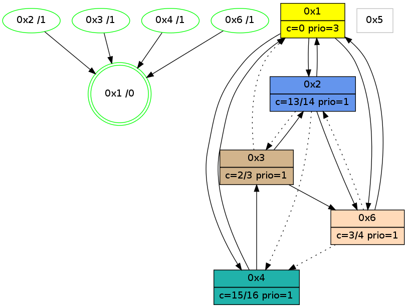

>> << IDX [start] -100 -25 -5 +0 +5 +25 +100 [1125.10896802]
 Previous packets
----------------------------------------------------------------------
1120.187891 beacon01(adaf) #0 coord=01,02,05,03,04,06 cycle=432.0ms assoc
-- color-indic=1 64 aa 61
1120.197852 beacon02(adaf) #0 coord=01,02,05,03,04,06 cycle=432.0ms assoc 64 fb 9e
1120.207852 beacon05(adaf) #0 coord=01,02,05,03,04,06 cycle=432.0ms assoc 64 5d b4
1120.217852 beacon03(adaf) #0 coord=01,02,05,03,04,06 cycle=432.0ms assoc 64 c1 90
1120.227852 beacon04(adaf) #0 coord=01,02,05,03,04,06 cycle=432.0ms assoc 64 67 ba
1120.237855 beacon06(adaf) #0 coord=01,02,05,03,04,06 cycle=432.0ms assoc 64 13 a6
1120.249596 [Hello(3): seq=926 sym=6,1,4 sysInfo=hasWarning stat=6:6,12,10,5/1:10,0,13,1/4:1,7,1,0]
1120.252139 [Color(2) seq=312 @0:0 color=13/14 prio=1 c=0,2,3,7,c,e,f;1,4,6,8,9,b]
1120.253851 [Color(6) seq=290 @0:0 color=3/4 prio=1 c=0,2,d;7,c,e,f]
1120.255899 [Hello(1): seq=828 sym=2,4,6 sysInfo=hasWarning,coloring-mode-on,ColoringModeRequestCalled stat=2:13,1,11,0/4:2,4,13,2/6:1,0,1,0]
1120.259241 [Color(1) seq=354 @0:0 color=0 prio=3 c=c,d,f;3,7,e]
----------------------------------------------------------------------
1120.679999 beacon01(adaf) #0 coord=01,02,05,03,04,06 cycle=432.0ms assoc
-- color-indic=1 64 6e 0e
1120.689960 beacon02(adaf) #0 coord=01,02,05,03,04,06 cycle=432.0ms assoc 64 3f f1
1120.699960 beacon05(adaf) #0 coord=01,02,05,03,04,06 cycle=432.0ms assoc 64 99 db
1120.709961 beacon03(adaf) #0 coord=01,02,05,03,04,06 cycle=432.0ms assoc 64 05 ff
1120.719960 beacon04(adaf) #0 coord=01,02,05,03,04,06 cycle=432.0ms assoc 64 a3 d5
1120.729961 beacon06(adaf) #0 coord=01,02,05,03,04,06 cycle=432.0ms assoc 64 d7 c9
1120.741718 [Hello(2): seq=1414 sym=3,6,1,4 sysInfo=hasWarning stat=3:12,7,11,3/6:0,1,0,0/1:3,11,14,0/4:4,10,2,0]
1120.746180 PARSE ERROR************************
Traceback (most recent call last):
File "PacketAnalysis.py", line 167, in showOperaPacket
structPacket = OperaPacketParse.parsePacket(rawPacket)
File "../../pkg-python/HipSens/Core/OperaPacketParse.py", line 461, in parsePacket
return parseHelloMessage(data)
File "../../pkg-python/HipSens/Core/OperaPacketParse.py", line 125, in parseHelloMessage
struct.unpack("!H",linkList[:2])[0])
error: unpack requires a string argument of length 2
48 18 04 00 03 a0 00 02 02 04 01 00 03 00 53 04 00 02 00 00 4c 04 01 db 45 22 4d 04
1120.747992 [Color(3) seq=223 @0:0 color=2/3 prio=1 c=0,3,d,f;7,c,e]
1120.749715 [Color(4) seq=209 @0:0 color=15/16 prio=1 c=0,3,7,c;1,2,4,6,8,9,b,d,e]
----------------------------------------------------------------------
1121.172107 beacon01(adaf) #0 coord=01,02,05,03,04,06 cycle=432.0ms assoc
-- color-indic=1 64 22 be
1121.182068 beacon02(adaf) #0 coord=01,02,05,03,04,06 cycle=432.0ms assoc 64 73 41
1121.192068 beacon05(adaf) #0 coord=01,02,05,03,04,06 cycle=432.0ms assoc 64 d5 6b
1121.202069 beacon03(adaf) #0 coord=01,02,05,03,04,06 cycle=432.0ms assoc 64 49 4f
1121.212069 beacon04(adaf) #0 coord=01,02,05,03,04,06 cycle=432.0ms assoc 64 ef 65
1121.222069 beacon06(adaf) #0 coord=01,02,05,03,04,06 cycle=432.0ms assoc 64 9b 79
1121.233823 [Hello(3): seq=927 sym=6,1 sysInfo=hasWarning stat=6:6,13,10,5/1:11,1,13,1]
1121.236220 [Color(2) seq=313 @0:0 color=13/14 prio=1 c=0,2,3,7,c,e,f;1,4,6,8,9,b]
1121.238093 [Color(6) seq=291 @0:0 color=3/4 prio=1 c=0,2,d;7,c,e,f]
1121.241146 [Hello(1): seq=829 sym=2,4,6 sysInfo=hasWarning,coloring-mode-on,ColoringModeRequestCalled stat=2:14,1,11,0/4:3,5,13,2/6:1,0,1,0]
1121.243202 [STC(1) #0.196 new-neigh,tree-change,inconsistent-stability,stable,to-color d=0]
1121.246735 [Color(1) seq=355 @0:0 color=0 prio=3 c=c,d,f;3,7,e]
----------------------------------------------------------------------
1121.664215 beacon01(adaf) #0 coord=01,02,05,03,04,06 cycle=432.0ms assoc
-- color-indic=1 64 e6 d1
1121.674175 beacon02(adaf) #0 coord=01,02,05,03,04,06 cycle=432.0ms assoc 64 b7 2e
1121.684177 beacon05(adaf) #0 coord=01,02,05,03,04,06 cycle=432.0ms assoc 64 11 04
1121.694177 beacon03(adaf) #0 coord=01,02,05,03,04,06 cycle=432.0ms assoc 64 8d 20
1121.704177 beacon04(adaf) #0 coord=01,02,05,03,04,06 cycle=432.0ms assoc 64 2b 0a
1121.714178 beacon06(adaf) #0 coord=01,02,05,03,04,06 cycle=432.0ms assoc 64 5f 16
1121.726166 [Hello(6): seq=842 sym=1 asym=4,2 sysInfo=hasWarning stat=1:8,2,10,0/4:5,10,1,0/2:0,1,0,0]
1121.728571 [Hello(4): seq=929 sym=1,3 sysInfo=hasWarning stat=1:12,14,2,0/3:3,2,5,4]
1121.730986 [STC(6)->1 #0.196 new-neigh,tree-change,inconsistent-stability,stable,to-color d=1]
1121.732904 [Color(3) seq=224 @0:0 color=2/3 prio=1 c=0,3,d,f;7,c,e]
1121.735295 [Hello(2): seq=1415 sym=3,6,1 asym=4 sysInfo=hasWarning stat=3:13,8,11,3/6:0,2,0,0/1:4,12,15,0/4:5,11,2,0]
1121.738181 [STC(2)->1 #0.196 new-neigh,tree-change,inconsistent-stability,stable,to-color d=1]
1121.742728 [STC(4)->1 #0.196 new-neigh,tree-change,inconsistent-stability,stable,to-color d=1]
1121.745008 [TreeStatus(4)-.->1 #0.196 new-neigh,tree-change,inconsistent-stability,stable child=1]
1121.748743 [Color(4) seq=210 @0:0 color=15/16 prio=1 c=0,3,7,c;1,2,4,6,8,9,b,d,e]
----------------------------------------------------------------------
1122.156322 beacon01(adaf) #0 coord=01,02,05,03,04,06 cycle=432.0ms assoc
-- color-indic=1 64 ab d6
1122.166283 beacon02(adaf) #0 coord=01,02,05,03,04,06 cycle=432.0ms assoc 64 fa 29
1122.176283 beacon05(adaf) #0 coord=01,02,05,03,04,06 cycle=432.0ms assoc 64 5c 03
1122.196284 beacon04(adaf) #0 coord=01,02,05,03,04,06 cycle=432.0ms assoc 64 66 0d
1122.206285 beacon06(adaf) #0 coord=01,02,05,03,04,06 cycle=432.0ms assoc 64 12 11
1122.218666 [Color(6) seq=292 @0:0 color=3/4 prio=1 c=0,2,d;7,c,e,f]
1122.222778 [Color(2) seq=314 @0:0 color=13/14 prio=1 c=0,2,3,7,c,e,f;1,4,6,8,9,b]
1122.228453 [Hello(1): seq=830 sym=2,4,6 sysInfo=hasWarning,coloring-mode-on,ColoringModeRequestCalled stat=2:15,1,12,0/4:3,6,14,3/6:1,0,2,0]
1122.231124 [Color(1) seq=356 @0:0 color=0 prio=3 c=c,d,f;3,7,e]
----------------------------------------------------------------------
1122.648431 beacon01(adaf) #0 coord=01,02,05,03,04,06 cycle=432.0ms assoc
-- color-indic=1 64 6f b9
1122.658392 beacon02(adaf) #0 coord=01,02,05,03,04,06 cycle=432.0ms assoc 64 3e 46
1122.668392 beacon05(adaf) #0 coord=01,02,05,03,04,06 cycle=432.0ms assoc 64 98 6c
1122.678392 beacon03(adaf) #0 coord=01,02,05,03,04,06 cycle=432.0ms assoc 64 04 48
1122.688393 beacon04(adaf) #0 coord=01,02,05,03,04,06 cycle=432.0ms assoc 64 a2 62
1122.698392 beacon06(adaf) #0 coord=01,02,05,03,04,06 cycle=432.0ms assoc 64 d6 7e
1122.710190 [Hello(3): seq=928 sym=6,2 asym=1 sysInfo=hasWarning stat=6:6,14,10,5/2:0,1,1,0/1:13,3,14,1]
1122.713887 [Hello(2): seq=1416 sym=6,1 asym=3,4 sysInfo=hasWarning stat=6:0,2,0,0/1:5,13,15,0/3:13,8,11,3/4:5,12,3,1]
1122.716330 [Hello(4): seq=930 sym=1,3 sysInfo=hasWarning stat=1:13,15,2,0/3:3,2,5,4]
1122.719229 [Color(4) seq=211 @0:0 color=15/16 prio=1 c=0,3,7,c;1,2,4,6,8,9,b,d,e]
----------------------------------------------------------------------
1123.140538 beacon01(adaf) #0 coord=01,02,05,03,04,06 cycle=432.0ms assoc
-- color-indic=1 64 23 09
1123.150499 beacon02(adaf) #0 coord=01,02,05,03,04,06 cycle=432.0ms assoc 64 72 f6
1123.160499 beacon05(adaf) #0 coord=01,02,05,03,04,06 cycle=432.0ms assoc 64 d4 dc
1123.170500 beacon03(adaf) #0 coord=01,02,05,03,04,06 cycle=432.0ms assoc 64 48 f8
1123.180499 beacon04(adaf) #0 coord=01,02,05,03,04,06 cycle=432.0ms assoc 64 ee d2
1123.190499 beacon06(adaf) #0 coord=01,02,05,03,04,06 cycle=432.0ms assoc 64 9a ce
1123.205836 [Hello(1): seq=831 sym=2,4,6 sysInfo=hasWarning,coloring-mode-on,ColoringModeRequestCalled stat=2:0,1,12,0/4:4,7,14,3/6:2,0,2,0]
1123.208510 [Color(3) seq=225 @0:0 color=2/3 prio=1 c=0,3,d,f;7,c,e]
1123.211230 [Color(1) seq=357 @0:0 color=0 prio=3 c=c,d,f;3,7,e]
1123.218257 [Color(2) seq=315 @0:0 color=13/14 prio=1 c=0,2,3,7,c,e,f;1,4,6,8,9,b]
----------------------------------------------------------------------
1123.632646 beacon01(adaf) #0 coord=01,02,05,03,04,06 cycle=432.0ms assoc
-- color-indic=1 64 e7 66
1123.642609 beacon02(adaf) #0 coord=01,02,05,03,04,06 cycle=432.0ms assoc 64 b6 99
1123.652607 beacon05(adaf) #0 coord=01,02,05,03,04,06 cycle=432.0ms assoc 64 10 b3
1123.662608 beacon03(adaf) #0 coord=01,02,05,03,04,06 cycle=432.0ms assoc 64 8c 97
1123.672608 beacon04(adaf) #0 coord=01,02,05,03,04,06 cycle=432.0ms assoc 64 2a bd
1123.682607 beacon06(adaf) #0 coord=01,02,05,03,04,06 cycle=432.0ms assoc 64 5e a1
1123.694309 [STC(1) #0.197 new-neigh,tree-change,inconsistent-stability,stable,to-color d=0]
1123.698058 [Hello(2): seq=1417 sym=6,1 asym=3,4 sysInfo=hasWarning stat=6:0,2,0,0/1:5,13,15,0/3:13,8,11,3/4:6,13,3,1]
1123.700561 [Hello(4): seq=931 sym=1,3 sysInfo=hasWarning stat=1:14,0,2,0/3:3,3,5,4]
1123.703460 [Color(4) seq=212 @0:0 color=15/16 prio=1 c=0,3,7,c;1,2,4,6,8,9,b,d,e]
----------------------------------------------------------------------
1124.124753 beacon01(adaf) #0 coord=01,02,05,03,04,06 cycle=432.0ms assoc
-- color-indic=1 64 b9 07
1124.134714 beacon02(adaf) #0 coord=01,02,05,03,04,06 cycle=432.0ms assoc 64 e8 f8
1124.144714 beacon05(adaf) #0 coord=01,02,05,03,04,06 cycle=432.0ms assoc 64 4e d2
1124.154714 beacon03(adaf) #0 coord=01,02,05,03,04,06 cycle=432.0ms assoc 64 d2 f6
1124.164714 beacon04(adaf) #0 coord=01,02,05,03,04,06 cycle=432.0ms assoc 64 74 dc
1124.174716 beacon06(adaf) #0 coord=01,02,05,03,04,06 cycle=432.0ms assoc 64 00 c0
1124.187083 [Color(6) seq=294 @0:0 color=3/4 prio=1 c=0,2,d;7,c,e,f]
1124.188602 [Hello(1): seq=832 sym=2,4,6 sysInfo=hasWarning,coloring-mode-on,ColoringModeRequestCalled stat=2:1,2,12,0/4:5,8,14,3/6:2,0,2,0]
1124.191002 [Color(3) seq=226 @0:0 color=2/3 prio=1 c=0,3,d,f;7,c,e]
1124.192940 [Color(2) seq=316 @0:0 color=13/14 prio=1 c=0,2,3,7,c,e,f;1,4,6,8,9,b]
1124.195258 [Color(1) seq=358 @0:0 color=0 prio=3 c=c,d,f;2,3,7,e]
----------------------------------------------------------------------
1124.616861 beacon01(adaf) #0 coord=01,02,05,03,04,06 cycle=432.0ms assoc
-- color-indic=1 64 7d 68
1124.626821 beacon02(adaf) #0 coord=01,02,05,03,04,06 cycle=432.0ms assoc 64 2c 97
1124.636822 beacon05(adaf) #0 coord=01,02,05,03,04,06 cycle=432.0ms assoc 64 8a bd
1124.646823 beacon03(adaf) #0 coord=01,02,05,03,04,06 cycle=432.0ms assoc 64 16 99
1124.656823 beacon04(adaf) #0 coord=01,02,05,03,04,06 cycle=432.0ms assoc 64 b0 b3
1124.666823 beacon06(adaf) #0 coord=01,02,05,03,04,06 cycle=432.0ms assoc 64 c4 af
1124.683044 [Hello(4): seq=932 sym=1,3 sysInfo=hasWarning stat=1:15,1,2,0/3:3,4,5,4]
1124.686579 [Color(4) seq=213 @0:0 color=15/16 prio=1 c=0,3,7,c;1,2,4,6,8,9,b,d,e]